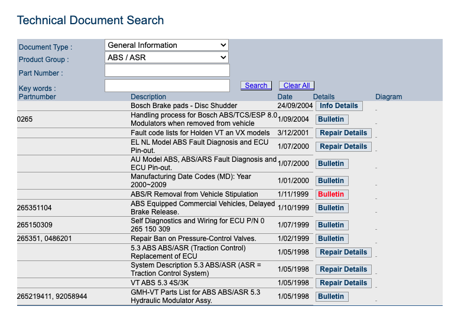
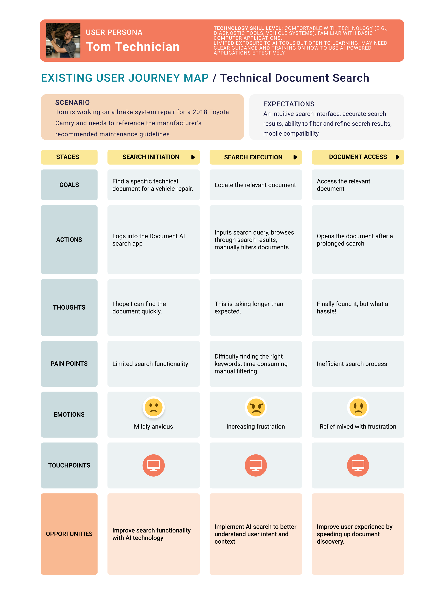
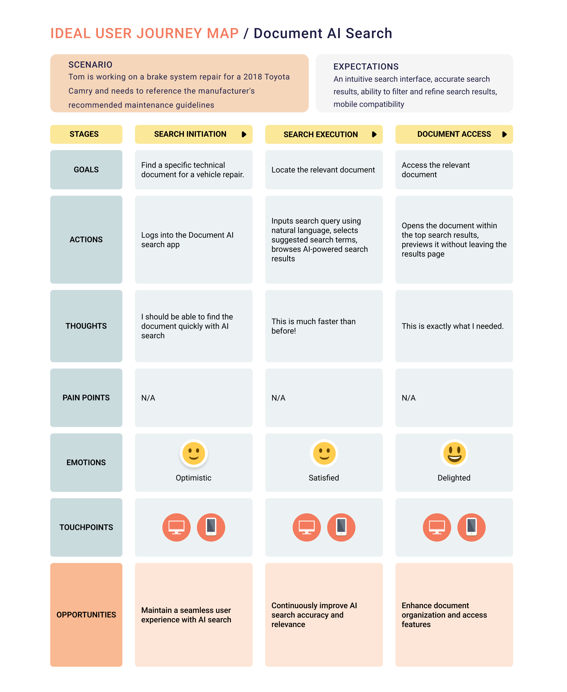

Problem Context
Automotive workshops operate in time-critical environments where technicians must diagnose and repair vehicles quickly and accurately. Access to technical documentation is essential, yet often inefficient.
Technicians spent excessive time searching for relevant technical documents. Existing interfaces made it difficult to query information naturally and efficiently, slowing repair and service workflows.

Research & Discovery
Insights for this project were informed through close collaboration with regional colleagues in Australia who work directly with automotive workshops and technician support teams.
These discussions highlighted that while technicians may begin with symptoms, procedures, or fault-finding questions, their primary objective is almost always to identify the correct part number in order to proceed with ordering and completing repairs.

Key insights:
- Technicians often start with task-based needs but quickly pivot toward part identification
- Accurate part numbers are critical for downstream actions including ordering, pricing, and avoiding repeat repairs
This understanding shaped the overall UX strategy.

💭 Reflection
This project reinforced that in operational environments, AI usability is less about flexibility and more about trust and task completion. While conversational interfaces can feel powerful, technicians valued experiences that helped them reach a clear outcome—particularly accurate part identification—with minimal friction.
Balancing conversational freedom with structured guidance proved essential. Designing the AI as a supportive navigation layer, rather than an all-knowing assistant, helped set appropriate expectations and increased confidence in the system’s outputs.